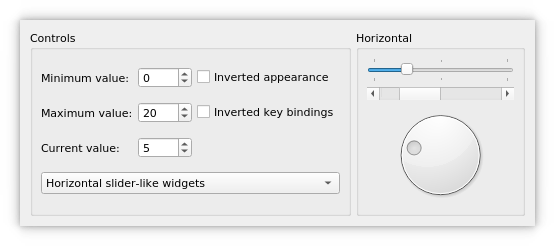

Sliders Example
The Sliders example shows how to use the different types of sliders available in Qt: QSlider, QScrollBar and QDial.
Qt provides three types of slider-like widgets: QSlider, QScrollBar and QDial. They all inherit most of their functionality from QAbstractSlider, and can in theory replace each other in an application since the differences only concern their look and feel. This example shows what they look like, how they work and how their behavior and appearance can be manipulated through their properties.
The example also demonstrates how signals and slots can be used to synchronize the behavior of two or more widgets.

Screenshot of the Sliders example
The Sliders example consists of two classes:
SlidersGroupis a custom widget. It combines a QSlider, a QScrollBar and a QDial.Windowis the main widget combining a QGroupBox and a QStackedWidget. In this example, the QStackedWidget provides a stack of twoSlidersGroupwidgets. The QGroupBox contain several widgets that control the behavior of the slider-like widgets.
First we will review the Window class, then we will take a look at the SlidersGroup class.
Window Class Definition
class Window : public QWidget { Q_OBJECT public: Window(QWidget *parent = nullptr); private: void createControls(const QString &title); SlidersGroup *horizontalSliders; SlidersGroup *verticalSliders; QStackedWidget *stackedWidget; QGroupBox *controlsGroup; QLabel *minimumLabel; QLabel *maximumLabel; QLabel *valueLabel; QCheckBox *invertedAppearance; QCheckBox *invertedKeyBindings; QSpinBox *minimumSpinBox; QSpinBox *maximumSpinBox; QSpinBox *valueSpinBox; QComboBox *orientationCombo; };
The Window class inherits from QWidget. It displays the slider widgets and allows the user to set their minimum, maximum and current values and to customize their appearance, key bindings and orientation. We use a private createControls() function to create the widgets that provide these controlling mechanisms and to connect them to the slider widgets.
Window Class Implementation
Window::Window(QWidget *parent) : QWidget(parent) { horizontalSliders = new SlidersGroup(Qt::Horizontal, tr("Horizontal")); verticalSliders = new SlidersGroup(Qt::Vertical, tr("Vertical")); stackedWidget = new QStackedWidget; stackedWidget->addWidget(horizontalSliders); stackedWidget->addWidget(verticalSliders); createControls(tr("Controls"));
In the constructor we first create the two SlidersGroup widgets that display the slider widgets horizontally and vertically, and add them to the QStackedWidget. QStackedWidget provides a stack of widgets where only the top widget is visible. With createControls() we create a connection from a controlling widget to the QStackedWidget, making the user able to choose between horizontal and vertical orientation of the slider widgets. The rest of the controlling mechanisms is implemented by the same function call.
connect(horizontalSliders, &SlidersGroup::valueChanged,
verticalSliders, &SlidersGroup::setValue);
connect(verticalSliders, &SlidersGroup::valueChanged,
valueSpinBox, &QSpinBox::setValue);
connect(valueSpinBox, QOverload<int>::of(&QSpinBox::valueChanged),
horizontalSliders, &SlidersGroup::setValue);
QHBoxLayout *layout = new QHBoxLayout;
layout->addWidget(controlsGroup);
layout->addWidget(stackedWidget);
setLayout(layout);
minimumSpinBox->setValue(0);
maximumSpinBox->setValue(20);
valueSpinBox->setValue(5);
setWindowTitle(tr("Sliders"));
}
Then we connect the horizontalSliders, verticalSliders and valueSpinBox to each other, so that the slider widgets and the control widget will behave synchronized when the current value of one of them changes. The valueChanged() signal is emitted with the new value as argument. The setValue() slot sets the current value of the widget to the new value, and emits valueChanged() if the new value is different from the old one.
We put the group of control widgets and the stacked widget in a horizontal layout before we initialize the minimum, maximum and current values. The initialization of the current value will propagate to the slider widgets through the connection we made between valueSpinBox and the SlidersGroup widgets. The minimum and maximum values propagate through the connections we created with createControls().
void Window::createControls(const QString &title) { controlsGroup = new QGroupBox(title); minimumLabel = new QLabel(tr("Minimum value:")); maximumLabel = new QLabel(tr("Maximum value:")); valueLabel = new QLabel(tr("Current value:")); invertedAppearance = new QCheckBox(tr("Inverted appearance")); invertedKeyBindings = new QCheckBox(tr("Inverted key bindings"));
In the private createControls() function, we let a QGroupBox (controlsGroup) display the control widgets. A group box can provide a frame, a title and a keyboard shortcut, and displays various other widgets inside itself. The group of control widgets is composed by two checkboxes, three spin boxes (with labels) and one combobox.
After creating the labels, we create the two checkboxes. Checkboxes are typically used to represent features in an application that can be enabled or disabled. When invertedAppearance is enabled, the slider values are inverted. The table below shows the appearance for the different slider-like widgets:
| QSlider | QScrollBar | QDial | ||||
|---|---|---|---|---|---|---|
| Normal | Inverted | Normal | Inverted | Normal | Inverted | |
| Qt::Horizontal | Left to right | Right to left | Left to right | Right to left | Clockwise | Counterclockwise |
| Qt::Vertical | Bottom to top | Top to bottom | Top to bottom | Bottom to top | Clockwise | Counterclockwise |
It is common to invert the appearance of a vertical QSlider. A vertical slider that controls volume, for example, will typically go from bottom to top (the non-inverted appearance), whereas a vertical slider that controls the position of an object on screen might go from top to bottom, because screen coordinates go from top to bottom.
When the invertedKeyBindings option is enabled (corresponding to the QAbstractSlider::invertedControls property), the slider's wheel and key events are inverted. The normal key bindings mean that scrolling the mouse wheel "up" or using keys like page up will increase the slider's current value towards its maximum. Inverted, the same wheel and key events will move the value toward the slider's minimum. This can be useful if the appearance of a slider is inverted: Some users might expect the keys to still work the same way on the value, whereas others might expect PageUp to mean "up" on the screen.
Note that for horizontal and vertical scroll bars, the key bindings are inverted by default: PageDown increases the current value, and PageUp decreases it.
minimumSpinBox = new QSpinBox;
minimumSpinBox->setRange(-100, 100);
minimumSpinBox->setSingleStep(1);
maximumSpinBox = new QSpinBox;
maximumSpinBox->setRange(-100, 100);
maximumSpinBox->setSingleStep(1);
valueSpinBox = new QSpinBox;
valueSpinBox->setRange(-100, 100);
valueSpinBox->setSingleStep(1);
orientationCombo = new QComboBox;
orientationCombo->addItem(tr("Horizontal slider-like widgets"));
orientationCombo->addItem(tr("Vertical slider-like widgets"));
Then we create the spin boxes. QSpinBox allows the user to choose a value by clicking the up and down buttons or pressing the Up and Down keys on the keyboard to modify the value currently displayed. The user can also type in the value manually. The spin boxes control the minimum, maximum and current values for the QSlider, QScrollBar, and QDial widgets.
We create a QComboBox that allows the user to choose the orientation of the slider widgets. The QComboBox widget is a combined button and popup list. It provides a means of presenting a list of options to the user in a way that takes up the minimum amount of screen space.
connect(orientationCombo, QOverload<int>::of(&QComboBox::activated),
stackedWidget, &QStackedWidget::setCurrentIndex);
connect(minimumSpinBox, QOverload<int>::of(&QSpinBox::valueChanged),
horizontalSliders, &SlidersGroup::setMinimum);
connect(minimumSpinBox, QOverload<int>::of(&QSpinBox::valueChanged),
verticalSliders, &SlidersGroup::setMinimum);
connect(maximumSpinBox, QOverload<int>::of(&QSpinBox::valueChanged),
horizontalSliders, &SlidersGroup::setMaximum);
connect(maximumSpinBox, QOverload<int>::of(&QSpinBox::valueChanged),
verticalSliders, &SlidersGroup::setMaximum);
connect(invertedAppearance, &QCheckBox::toggled,
horizontalSliders, &SlidersGroup::invertAppearance);
connect(invertedAppearance, &QCheckBox::toggled,
verticalSliders, &SlidersGroup::invertAppearance);
connect(invertedKeyBindings, &QCheckBox::toggled,
horizontalSliders, &SlidersGroup::invertKeyBindings);
connect(invertedKeyBindings, &QCheckBox::toggled,
verticalSliders, &SlidersGroup::invertKeyBindings);
QGridLayout *controlsLayout = new QGridLayout;
controlsLayout->addWidget(minimumLabel, 0, 0);
controlsLayout->addWidget(maximumLabel, 1, 0);
controlsLayout->addWidget(valueLabel, 2, 0);
controlsLayout->addWidget(minimumSpinBox, 0, 1);
controlsLayout->addWidget(maximumSpinBox, 1, 1);
controlsLayout->addWidget(valueSpinBox, 2, 1);
controlsLayout->addWidget(invertedAppearance, 0, 2);
controlsLayout->addWidget(invertedKeyBindings, 1, 2);
controlsLayout->addWidget(orientationCombo, 3, 0, 1, 3);
controlsGroup->setLayout(controlsLayout);
}
We synchronize the behavior of the control widgets and the slider widgets through their signals and slots. We connect each control widget to both the horizontal and vertical group of slider widgets. We also connect orientationCombo to the QStackedWidget, so that the correct "page" is shown. Finally, we lay out the control widgets in a QGridLayout within the controlsGroup group box.
SlidersGroup Class Definition
class SlidersGroup : public QGroupBox { Q_OBJECT public: SlidersGroup(Qt::Orientation orientation, const QString &title, QWidget *parent = nullptr); signals: void valueChanged(int value); public slots: void setValue(int value); void setMinimum(int value); void setMaximum(int value); void invertAppearance(bool invert); void invertKeyBindings(bool invert); private: QSlider *slider; QScrollBar *scrollBar; QDial *dial; };
The SlidersGroup class inherits from QGroupBox. It provides a frame and a title, and contains a QSlider, a QScrollBar and a QDial.
We provide a valueChanged() signal and a public setValue() slot with equivalent functionality to the ones in QAbstractSlider and QSpinBox. In addition, we implement several other public slots to set the minimum and maximum value, and invert the slider widgets' appearance as well as key bindings.
SlidersGroup Class Implementation
SlidersGroup::SlidersGroup(Qt::Orientation orientation, const QString &title, QWidget *parent) : QGroupBox(title, parent) { slider = new QSlider(orientation); slider->setFocusPolicy(Qt::StrongFocus); slider->setTickPosition(QSlider::TicksBothSides); slider->setTickInterval(10); slider->setSingleStep(1); scrollBar = new QScrollBar(orientation); scrollBar->setFocusPolicy(Qt::StrongFocus); dial = new QDial; dial->setFocusPolicy(Qt::StrongFocus); connect(slider, &QSlider::valueChanged, scrollBar, &QScrollBar::setValue); connect(scrollBar, &QScrollBar::valueChanged, dial, &QDial::setValue); connect(dial, &QDial::valueChanged, slider, &QSlider::setValue);
First we create the slider-like widgets with the appropriate properties. In particular we set the focus policy for each widget. Qt::FocusPolicy is an enum type that defines the various policies a widget can have with respect to acquiring keyboard focus. The Qt::StrongFocus policy means that the widget accepts focus by both tabbing and clicking.
Then we connect the widgets with each other, so that they will stay synchronized when the current value of one of them changes.
connect(dial, &QDial::valueChanged, this, &SlidersGroup::valueChanged);
We connect dial's valueChanged() signal to the SlidersGroup's valueChanged() signal, to notify the other widgets in the application (i.e., the control widgets) of the changed value.
QBoxLayout::Direction direction;
if (orientation == Qt::Horizontal)
direction = QBoxLayout::TopToBottom;
else
direction = QBoxLayout::LeftToRight;
QBoxLayout *slidersLayout = new QBoxLayout(direction);
slidersLayout->addWidget(slider);
slidersLayout->addWidget(scrollBar);
slidersLayout->addWidget(dial);
setLayout(slidersLayout);
}
Finally, depending on the orientation given at the time of construction, we choose and create the layout for the slider widgets within the group box.
void SlidersGroup::setValue(int value) { slider->setValue(value); }
The setValue() slot sets the value of the QSlider. We don't need to explicitly call setValue() on the QScrollBar and QDial widgets, since QSlider will emit the valueChanged() signal when its value changes, triggering a domino effect.
void SlidersGroup::setMinimum(int value) { slider->setMinimum(value); scrollBar->setMinimum(value); dial->setMinimum(value); } void SlidersGroup::setMaximum(int value) { slider->setMaximum(value); scrollBar->setMaximum(value); dial->setMaximum(value); }
The setMinimum() and setMaximum() slots are used by the Window class to set the range of the QSlider, QScrollBar, and QDial widgets.
void SlidersGroup::invertAppearance(bool invert) { slider->setInvertedAppearance(invert); scrollBar->setInvertedAppearance(invert); dial->setInvertedAppearance(invert); } void SlidersGroup::invertKeyBindings(bool invert) { slider->setInvertedControls(invert); scrollBar->setInvertedControls(invert); dial->setInvertedControls(invert); }
The invertAppearance() and invertKeyBindings() slots control the child widgets' invertedAppearance and invertedControls properties.